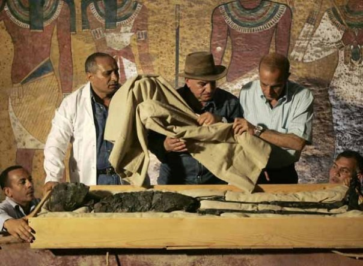

Achievements
Zahi Hawass has made significant contributions to the field of archaeology and Egyptology. Here are some of his most notable achievements:
- Discovery of the Tombs of the Pyramid Builders - Uncovered the tombs of the workers who built the pyramids.
- Valley of the Golden Mummies - Led the excavation of a vast burial site in Bahariya Oasis.
- Repatriation of Stolen Artifacts - Successfully recovered thousands of stolen Egyptian artifacts.
- Use of Modern Technology - Pioneered the use of CT scans to study mummies.
- Promotion of Egyptian Heritage - Played a key role in promoting Egypt's cultural heritage globally.
- Discovery of the Tomb of Tutankhamun's Family - Identified the mummies of Tutankhamun's family members.
- Restoration of the Sphinx - Led the restoration project of the Great Sphinx of Giza.
- Establishment of the Grand Egyptian Museum - Played a key role in the development of the Grand Egyptian Museum.